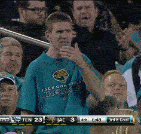

Daryush "Roosh" Valizadeh created ROK in October 2012. You can visit his blog at RooshV.com or follow him on Twitter and Facebook.


Every now and then the culture offers us an important moment which suggests that the current generation is beyond lost, and the best thing we can do as aware men is to leave a record of the carnage for future generations so they can avoid our mistakes and make society a better place for both sexes. I think we have such a moment in the case of Max Temkin, a designer from Chicago who has consulted for Obama and created a successful party game for nerds called Cards Against Humanity, which has been featured in many news outlets.
Recently, Temkin was falsely accused of rape on Facebook by an old college flame. Instead of vigorously defending his reputation and attacking the accuser for her libel, he has decided the best response is to crouch into a foetus and whine that rape culture is a problem. You read that right: he is using his own false rape accusation to defend feminist talking points.
The type of guy who gets falsely accused of rape
Apparently he never even slept with his accuser:
I had a really brief relationship with this girl in college; her dorm room was next to mine, and after a few evenings staying up talking all night, we made out. We spent a few nights in each others’ rooms, but we never had sex and neither of us pressured the other into doing anything we weren’t comfortable with. After a few nights, I broke things off in the cowardly way that 19-year-old guys do, and I just stopped returning her calls and texts. I can imagine she was hurt by this, I know that I would be hurt if someone broke up with me that way.
Poor girl. She got “dumped” by a guy who didn’t even fuck her, and who must now e-mote to all that this may have been the biggest mistake in his life. All supremely gentlemanly ROK readers know that a young girl would never go ghost on on a man or stop returning his texts. All women are not like that. They are not attention whores who are rude and flakey and who reconstruct past events in order to incarcerate innocent men or abscond with cash and prizes in a frivorce settlement. We must treat all women with respect in order to have fulfilling everlasting relationships with them.
The accusation from this girl came ten years after the fact. Here is what she wrote on Facebook:
Several people that I went to school with have posted a Baltimore Sun article from 2012 about the success of Cards Against Humanity, a popular indie party game created by a Goucher alum.
That is my rapist.
Having his face pop up on my news feed unexpectedly in any context has the capacity to ruin my day. Seeing him praised in the press is giving me a panic attack.
He should not be held as a good example of the excellence that Goucher grads have, can and will continue to achieve.
The bolded statement clues us in that her accusation is bullshit. A girl who has been raped doesn’t speak like a lawyer and suggest her rapist “has the capacity” to ruin her day. News flash: real rape has the capacity to ruin a girl’s life, not just one 24 hour day cycle. Does our white knight hero Max respond like Michael Arrington, founder of Tech Crunch, who was falsely accused of rape and smacked down the accusation using the court system whereby his accuser had to retract her statements? Nope. He dives into a monologue about rape culture and apologizes to his accuser:
Part of rape culture that hurts everyone is that it makes it difficult to talk about what is and is not consent, and makes it incredibly scary for people to speak up when their boundaries are crossed. It is entirely possible she read something completely different than I did into an awkward college hookup. If any part of that was traumatic for her, I am sincerely sorry, and I wish we would have had a chance to address it privately. I’ve sent her an email and a Facebook message and given her my contact information, but so far I haven’t heard back (but she did edit her post to remove my name).
Only a sniveling, pathetic excuse of a man would apologize to someone who intends to ruin his life based on a falsehood that carries a sentence of several years in prison. Is this the type of gelatinous boobed man that we are supposed to be proud of creating after decades of feminist brainwashing that men must be sensitive, emotional, deferential, and non-masculine? We now have a society of men can’t even defend themselves when they were falsely accused, who sides with the false accuser and her political beliefs. Max even puts on his Social Justice Warrior uniform to white knight for all women who will falsely accuse their ex-boyfriends or hookups:
I spoke with my lawyer, and she thinks I have a clear case to sue this woman for libel and get a restraining order, but I have no desire to bully or harm her. Additionally, I’m not wild about the precedent that sets for other women to come forward in cases of actual sexual assault.
If you didn’t think this man could grovel any worse, behold:
I will continue to be a feminist and an advocate for women’s rights to the best of my capacity.
[…]
You will not harass or threaten the woman making these claims. I am not looking for a mob of people carrying pitchforks on my behalf. If you harass her or go after her in any way, you are not a friend of mine, and you are not a friend of Cards Against Humanity.
[…]
If you see me this weekend at GaymerX, I could use a hug.

Being falsely accused of rape is one of the worst things that can happen to a Western man, especially in a society that presumes him guilty. That isn’t helped when men void of testosterone like Max Temkin enable lying women to destroy their lives without suffering any repercussions. Instead of groveling, he must fight. At the minimum he must vigorously defend his reputation while shaming the lying accuser. If a man is not willing to defend himself, he doesn’t deserve help from others.
Max is the expected result of a feminist society that teaches everyone women can do no wrong and must be protected at all times. He has been afflicted by a sort of Stockholm syndrome whereby he refuses to get angry at the force that wants to see him destitute. I imagine if he was an African slave in America’s south before the Civil War, he would argue that his massa is actually a good owner, cares about his well-being, and is hoping that slavery will be gradually phased out within the next five hundred years.
I hope cases like Max’s become more publicized, because they will serve as an alarm for men without boobs to begin understanding that our culture is broken, and the power given to women to destroy men’s lives must finally be checked.